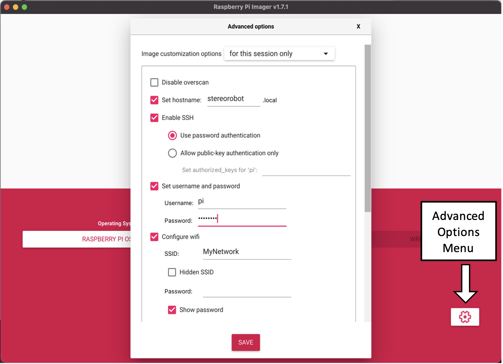
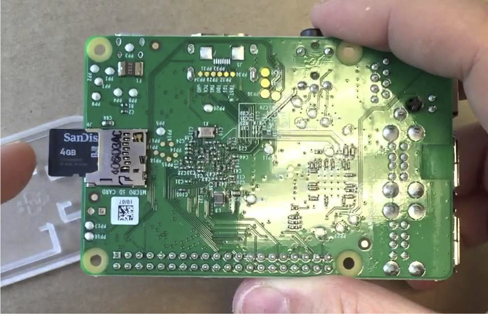
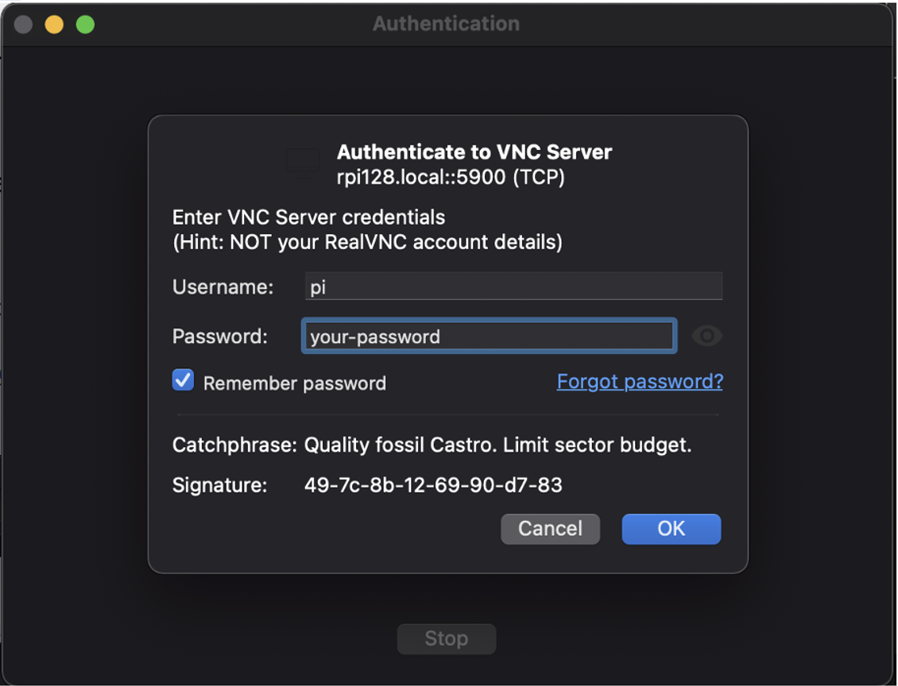
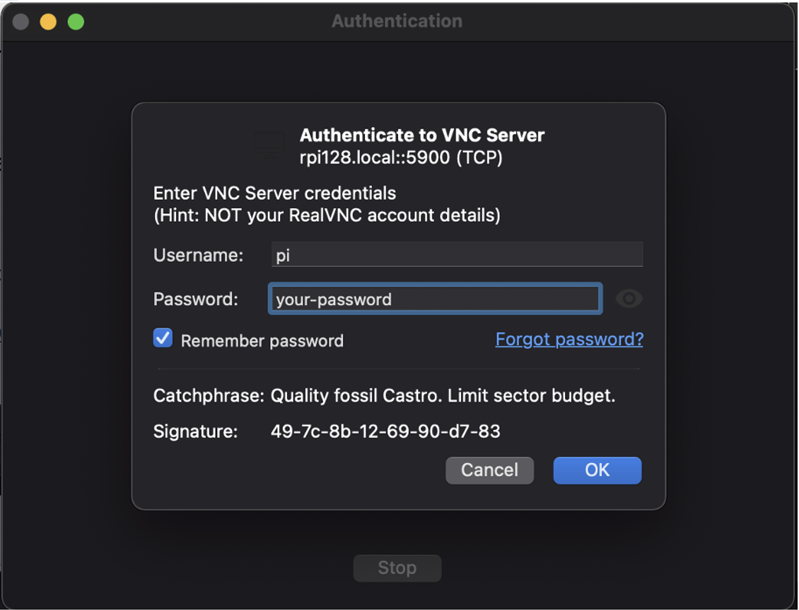

Getting Started
OS Installation
Introduction
StereoRobot was developed on Raspbian Bullseye. The new 64 bit architecture brings support for easier installation of system libraries like OpenCV, however camera support has changed in an unexpected way. There are also some setup steps to enable interacting with the raspberry Pi Remotely.
Prerequisites
To install and sett up the Raspberry Pi environment, you will need: - A computer - An Internet Connection to download the correct OS version - A 32 GB (minimum) MicroSD card - A MicroSD card reader to read/write your MicroSD card on your computer - A Raspberry Pi 4 - (recommended)* connected to a Monitor, keyboard, and mouse. - A secure wifi router that you can access administrator options on.
Having a monitor, keyboard and mouse can save a lot of troubleshooting headaches while setting up remote connectivity. You may proceed without these however if you run in to trouble, a monitor is a good first step.
Install OS
Connect a micro SD card reader to the laptop
On a computer, [download](https://www.raspberrypi.com/software/) and launch the Raspberry Pi Imager
Under Operating System, select Raspberry Pi OS (other) > Raspberry Pi OS (64 bit). Ensure that the description indicates that the OS code name is Bullseye
{kind=link}
4. Under the advanced options menu, • Select Set hostname as stereorobot • Select Enable SSH using password authentication • Select Set username and password using Username: Pi and create a secure password. • (recommended) Select Configure wifi network, use SSID and Password of a wifi network that is connected to the internet.
{kind=link}
Under Choose Storage, navigate to and select the micro SD card
6. Finally, click Write. This should takes 5-10 minutes depending on internet speeds [DEVELOPPER NOTE]: In the future, the default Raspberry Pi OS may not be Bullseye. The guide will need to be updated to show the user where to locate and install older images.
You can now eject the MicroSD card and insert it into your Raspberry Pi
{kind=link}
With the Keyboard, Mouse and Monitor plugged in, insert the power cord into the Raspberry Pi and let it boot up. If all goes well, the Raspberry Pi should load to the desktop.
OS Setup
Remote Desktop
Working on the Raspberry Pi with a monitor setup can be clunky, especially when working through with mobile robotics. This project suggests using a VNC remote desktop connection to work on your Raspberry pi from your personal computer. There are many potential pitfalls when setting up a VNC, however this guide aims to sidestep as many as possible.
There are many ways to connect to your Raspberry Pi from your computer through a local network. This guide will cover using a common WIFI router, however some troubleshooting options are discussed at the end.
SSH Login The first step is to attempt to SSH into your Raspberry Pi.
Ensure your Raspberry Pi and Personal Computer are connected to the same network.
On your Personal Computer, open a terminal window
Enter the command ssh pi@stereorobot.local
Enter your secure password
Your terminal should now indicate you are working on your Raspberry Pi since each line should start with `pi@stereorobot:~ $ `. A more thorough guide is available `here`_.
SSH Troubleshooting Hopefully your Raspberry Pi is already connected to your wifi network from when you installed the disk image. To test this, try to enter the following command on your PC: ssh pi@stereorobot.local. If this works, continue to the next section. If not, try the following troubleshooting ideas. Connection:
*(recommended) Use a cheap router specifically for connecting to the robot.
Connect the RPi directly to the router through ethernet
Connect your PC directly to the router through ethernet
Disable firewall settings on your router
Connect to your Raspberry Pi directly through your PC’s ethernet. You will need to enable internet sharing on your device.
- Settings:
Ensure SSH is enabled by clicking Main Menu (top left of screen) > Preferences > Configuration > Raspberry Pi Configuration
The router does not require internet when operating the robot, but the RPi will need an internet connection for setup. In this case, you may need to set up the RPi as a desktop setup before connecting to the internet-less Wifi router.
VNC Login Once you have successfully SSH’d into your RPi, you can now change some system settings.
1. In your SSH Terminal, type: sudo raspi-config You can navigate this menu using directional arrows. [Up/Down] scrolls through the menu, [Left/Right] lets you highlight the <Select> and <Back> buttons. [Enter] allows you to enter. 2. Navigate to System Options > Boot / Auto Login > Desktop Autologin 3. Navigate to Interface Options > VNC > Yes 4. Navigate to Interface Options > Legacy Camera > Yes
- When the RPi is booted without a monitor, it defaults to headless mode. This means that the VNC will connect, but there will be no desktop to display. We can force the desktop to boot to desktop with the following steps:
In SSH terminal, type
- sudo nano /boot/config.txt
The nano text editor will appear. Scroll to the bottom of the file and paste the following text:
hdmi_force_hotplug=1 hdmi_group=1 hdmi_mode=16 # (or any other pi resolution you want, 16 is for 1080p)
To save and exit, type [ctrl+x], [y], [enter]
- Now, VNC should be ready on the raspberry pi. To set up on your computer, follow the following steps:
[Download RealVNC Viewer](https://www.realvnc.com/en/connect/download/viewer/) and follow the installation process.
Open RealVNC Viewer. In the search bar, enter stereorobot.local
 

{kind=link}